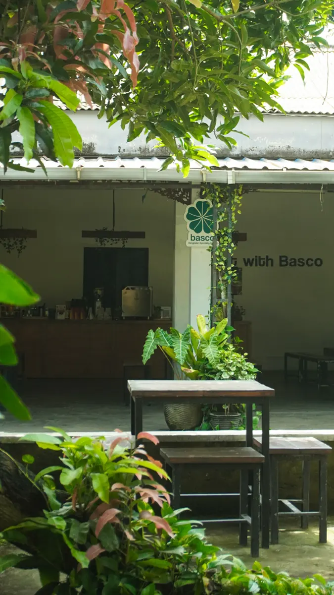
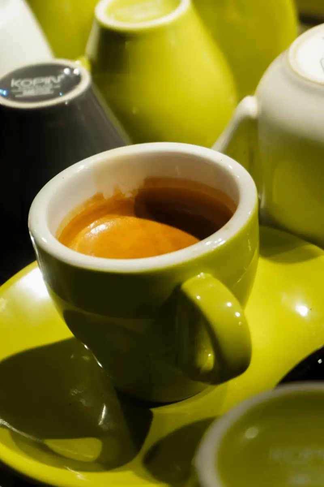
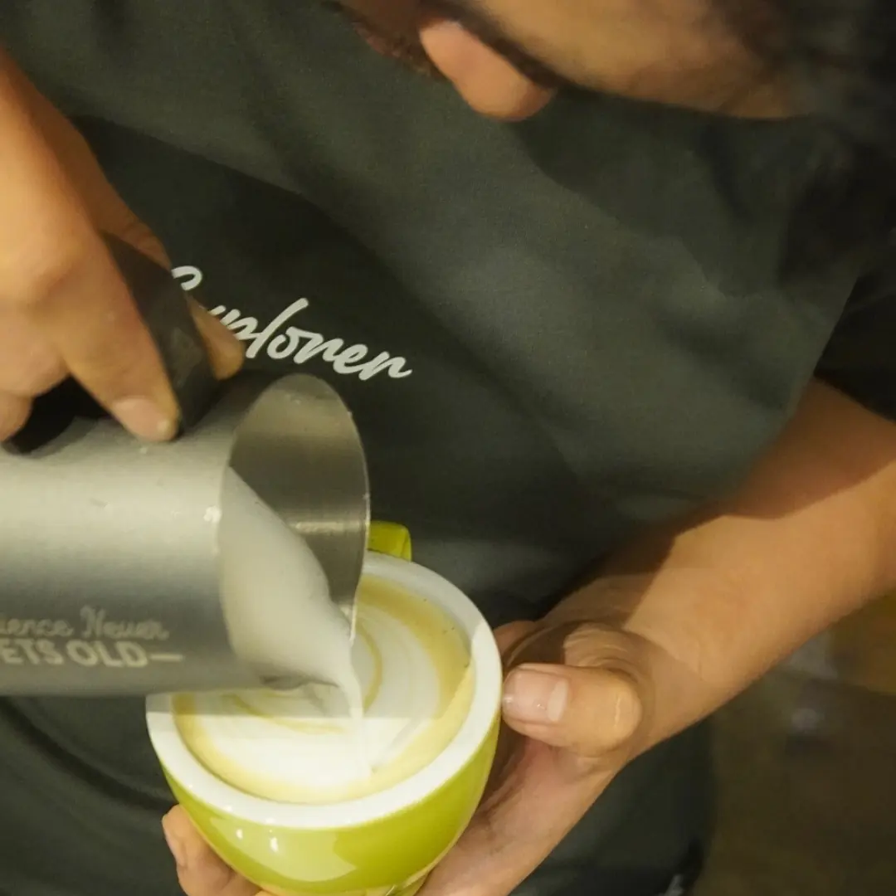
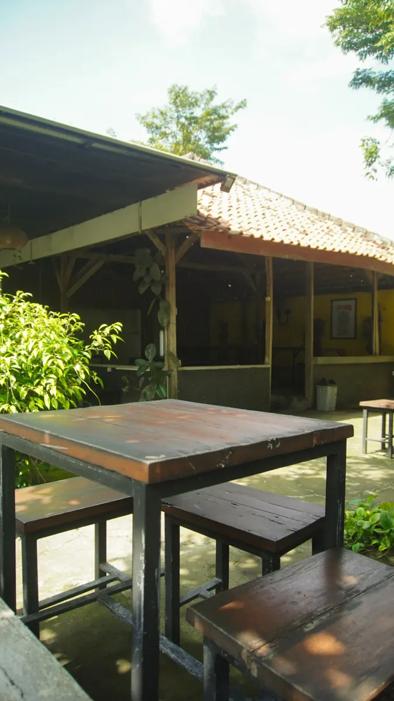

Ruang tenang untuk secangkir kopi yang hangat
Sederhana, rehat dan hangat. Rumah kedua setelah lelah bekerja.


- Jam buka
- 09.00 – 23.00
- Alamat
- Jl. Halim Perdanakusuma No.40, Bangkalan
- 0851 9697 6296
Paling sering dipesan
Klasik dan seasonal dari bar kami.
Sederhana bukan berarti biasa
Basco memadukan kopi pilihan dengan suasana yang menenangkan. Setiap tegukan adalah pengalaman menikmati kopi tanpa hiruk pikuk, cara mengisi kembali energi setelah lelah bekerja.
Bagi kami, kopi adalah cerita dan ketenangan adalah jiwa dari setiap rasanya.


Duduk di taman kami
Sedikit momen dari ruang dan cangkir Basco.